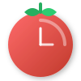

Itadaki Pomodoro
Gestor de Proyectos
Exportar JSON
Importar JSON
☕ Break
▼
Tiempo (min):
Guardar
🔔
📊
⏱️+
📦
🍅 Trabajado: 0h 0m
☕ Descanso: 0h 0m
00:00
06:00
12:00
18:00
24:00
+
Nuevo proyecto
Nombre:
Descripción:
Guardar
Cancelar
Agregar Tiempo Manual
Proyecto:
Fecha y Hora:
Duración (minutos):
Tipo:
🍅 Trabajo
☕ Descanso
Guardar
Cancelar
Proyectos Archivados
Cerrar
Estadísticas de Tiempo
Filtros:
-
Basado en todo el tiempo registrado (Completado + Detenido).
Cerrar